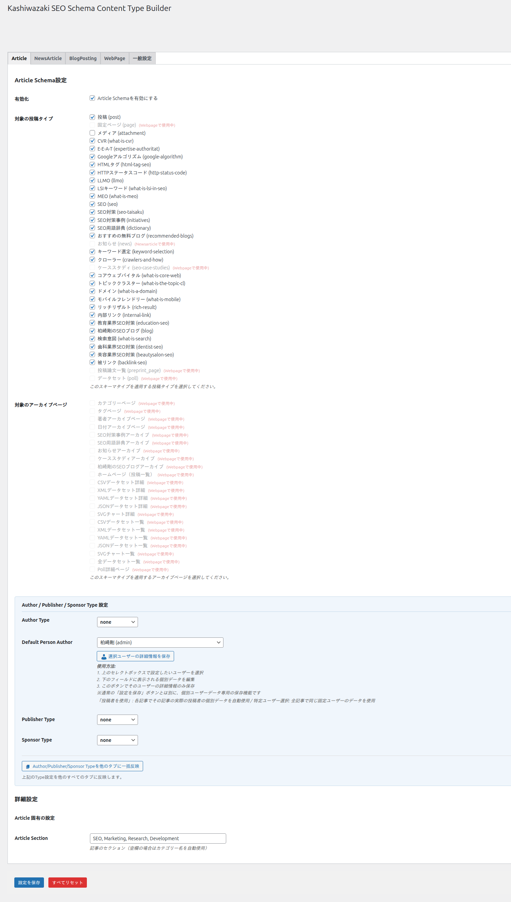

スキーマ設定
投稿タイプごとのスキーマ設定、BreadcrumbListの出力、アーカイブページのスキーマ設定について解説します。
投稿タイプ別スキーマ設定
設定画面の「投稿タイプ設定」タブでは、WordPressに登録されている各投稿タイプに対して、個別にスキーマタイプと出力内容を設定できます。

設定画面の「投稿タイプ設定」タブを開きます。登録されているすべての投稿タイプ（post、page、カスタム投稿タイプ）が一覧表示されます。
各投稿タイプに対して、スキーマタイプ（Article、NewsArticle、BlogPosting、WebPage）をドロップダウンから選択します。
出力するプロパティ（著者情報、公開日、更新日、画像など）を個別にON/OFFできます。
「保存」ボタンをクリックして設定を反映します。AJAXで非同期保存されるため、ページのリロードは不要です。
推奨スキーマタイプの組み合わせ
| 投稿タイプ | 推奨スキーマタイプ |
|---|---|
| 投稿（post） | Article または BlogPosting（ブログサイトの場合） |
| 固定ページ（page） | WebPage |
| ニュース系カスタム投稿タイプ | NewsArticle（Google News対応が必要な場合） |
| 商品・サービスページ | WebPage |
NewsArticleスキーマを使用する場合、Googleはコンテンツがニュース性のあるものであることを期待します。通常のブログ記事にはArticleまたはBlogPostingを使用してください。
BreadcrumbList設定
「BreadcrumbList」タブでは、パンくずリストの構造化データ出力を設定できます。BreadcrumbListスキーマにより、検索結果にサイトの階層構造がパンくず形式で表示されます。
BreadcrumbListの出力内容
| 設定項目 | 説明 |
|---|---|
| BreadcrumbList出力 | パンくずリスト構造化データの出力ON/OFF |
| ホーム名 | パンくずの先頭に表示されるホームページの名称 |
| カテゴリ階層 | カテゴリの親子関係をパンくずに反映するかどうか |
BreadcrumbList JSON-LD の出力例:
{
"@context": "https://schema.org",
"@type": "BreadcrumbList",
"itemListElement": [
{
"@type": "ListItem",
"position": 1,
"name": "ホーム",
"item": "https://example.com/"
},
{
"@type": "ListItem",
"position": 2,
"name": "カテゴリ名",
"item": "https://example.com/category/"
},
{
"@type": "ListItem",
"position": 3,
"name": "記事タイトル",
"item": "https://example.com/post-slug/"
}
]
}他のプラグイン（パンくずプラグイン、SEOプラグインなど）がBreadcrumbListスキーマを出力している場合、JSON-LDが重複する可能性があります。重複を避けるため、他のプラグインのBreadcrumbList出力を無効にするか、本プラグインのBreadcrumbList出力をOFFにしてください。
アーカイブページ設定
「アーカイブ設定」タブでは、カテゴリ・タグ・日付・著者などのアーカイブページに出力するスキーマを設定できます。
アーカイブページのスキーマタイプ
| アーカイブタイプ | 出力されるスキーマ |
|---|---|
| カテゴリアーカイブ | CollectionPage |
| タグアーカイブ | CollectionPage |
| 日付アーカイブ | CollectionPage |
| 著者アーカイブ | ProfilePage |
| カスタム投稿タイプアーカイブ | CollectionPage |
アーカイブページのスキーマは、ページ内に含まれる投稿のリスト情報も含めて出力されます。これにより、検索エンジンがアーカイブページの内容構成を正確に把握できます。
プレビュー機能
「プレビュー」タブでは、現在の設定に基づいて出力されるJSON-LDをリアルタイムで確認できます。投稿タイプを選択すると、その投稿タイプに対応するJSON-LDサンプルが表示されます。
プレビューで確認したJSON-LDは、Googleリッチリザルトテストに貼り付けて構造化データの妥当性を検証できます。